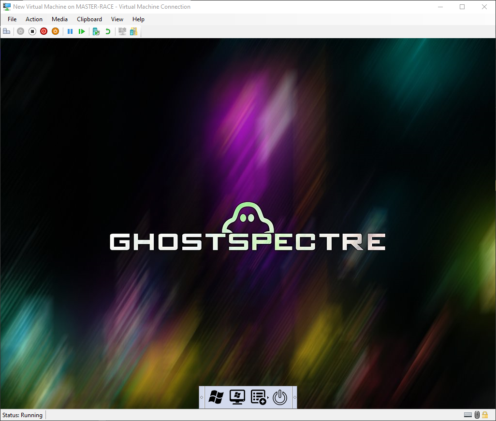
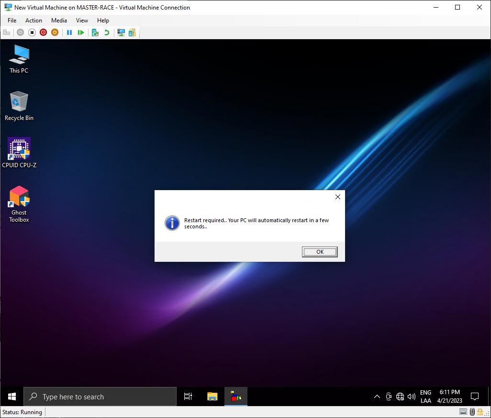
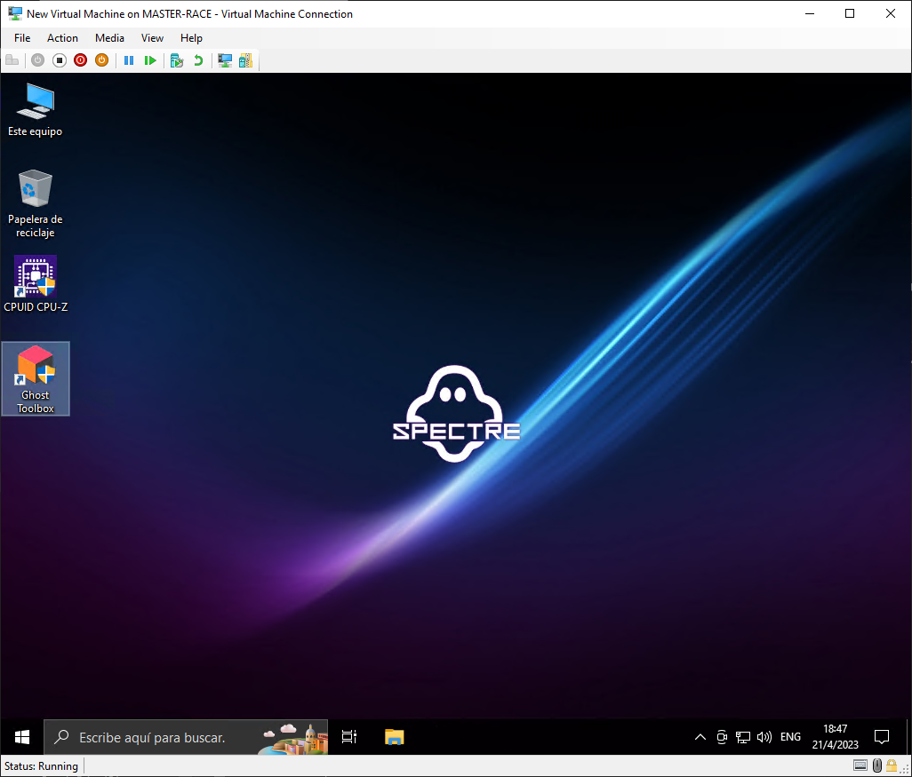
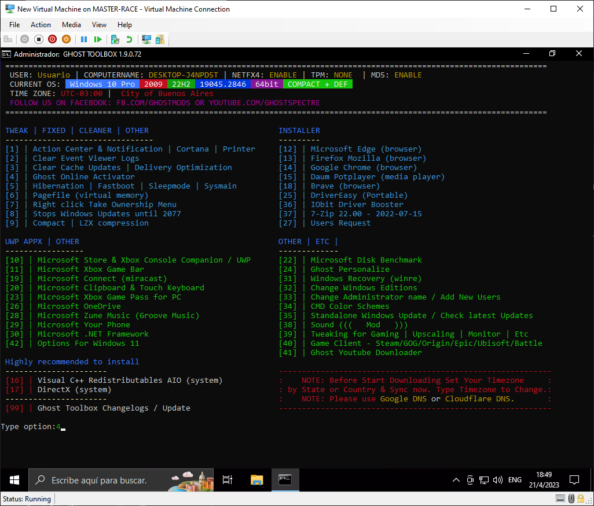
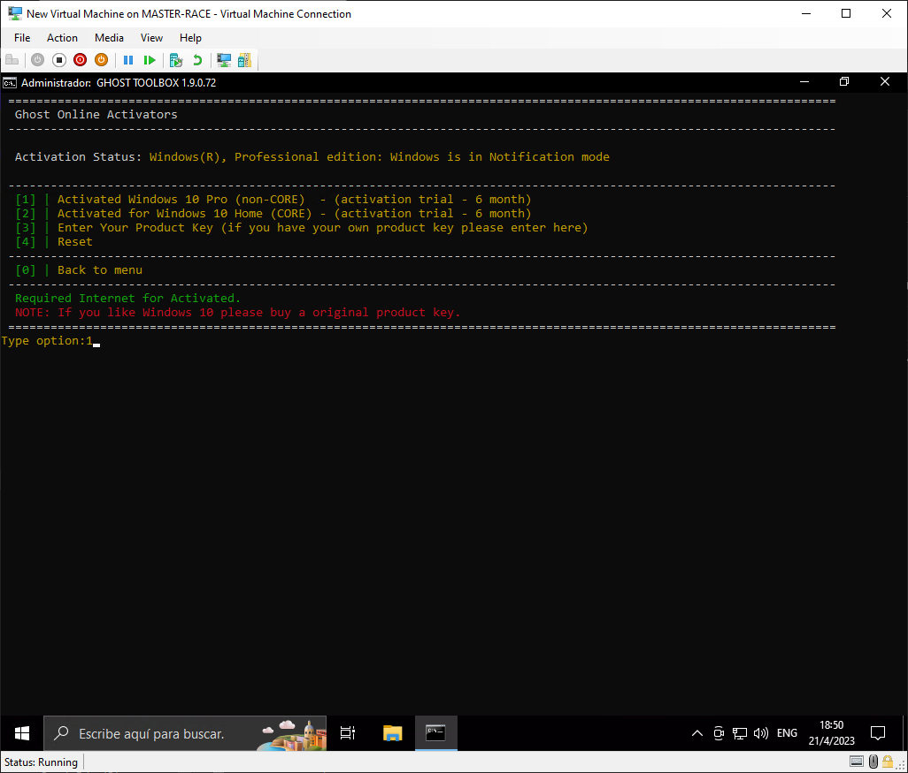
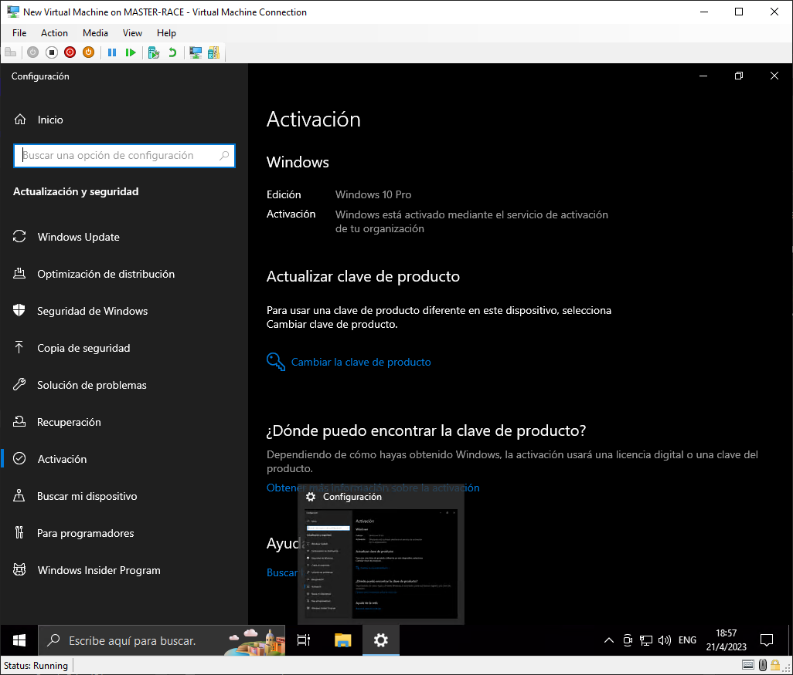
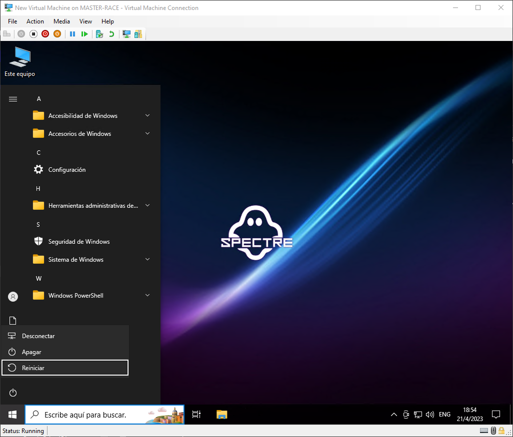

Instalación Windows 10
En esta guía vamos a realizar los pasos siguientes al Back Up y grabado de sistema operativo.
Instalación del sistema operativo y personalización general
Requerimientos:
- Medio Extraíble (Pen Drive) con almacenamiento superior a 8 GB.
- Instalador de Windows 10.
- Tiempo(4hs Aprox).
-
Bienvenida
- Seleccionamos el icono de Windows.

-
Elegimos el idioma
- La segunda opción la cambiamos a Argentina y presionamos siguiente.

-
Iniciar clave del producto
- Elegimos la opción "I don't have a product key" (no poseo una clave de producto).

-
Selección de versión
- Elegimos la versión "WINDOWS 10 PRO-COMPACT + DEF" y presionamos siguiente.

-
Términos y condiciones de Windows
- Aceptamos los términos y presionamos siguiente

-
Instalacion personalizada
- Seleccionamos la opción "Custom: Install Windows only (advanced)".

-
A.Selección donde se va a instalar el Windows.
- En esta sección encontraremos las particiones del disco

-
B.Eliminación de particiones anteriores
- Cliqueamos una vez arriba de cada partición y seleccionamos la opción "eliminar" y aceptamos.

-
C.Selección de partición donde irá la instalación
- Después de hacer la eliminación de particiones anteriores nos va a quedar solo una partición vacía. cliqueamos una vez esta partición y ponemos siguiente

-
Instalación en progreso

-
Selección de país
- Elegimos Argentina y seleccionamos "siguiente".

-
Selección de teclado
- A.Esta es la sección de selección de idioma para teclado, vamos a seleccionar "Latín América" y ponemos siguiente.


-
Nombre de usuario
- Ponemos el nombre del cliente.

-
Ingreso de contraseña
- Este campo lo vamos a dejar vacío, al menos que el cliente lo pida.

-
Selección de versión dentro del sistema

-
Reinicio de PC

-
Networks
- Es de vital importancia estar conectado a una red para continuar con el proceso.

-
Configurar idioma

-
Añadir idioma
- A.Seleccionamos el icono que dice "Add a language".

-
Buscamos el idioma "Español" y presionamos siguiente.

-
Establecer idioma predeterminado
- Clickeamos "Set as my Windows display language" (Establecer como mi idioma de visualización de Windows) y presionamos en Install

-
Eliminar idioma
- Seleccionamos en "inglés", opción "Remove" y por último "Remove language".

-
Windows Update

-
Renaudar Actualizaciones

-
Espera de actualizaciones

-
Truco 21%
- Cuando cualquiera de las actualizaciones lleguen al 21% podemos directamente proceder a reiniciar la PC, ya que las actualizaciones van a continuar previamente al apagado completo de la PC.

-
Volver a buscar actualizaciones
Volvemos a buscar actualizaciones varias veces para estar seguros de no dejar ninguna pendiente.

-
Ghost
- Abrimos la App Ghost, la misma la vamos a encontrar en el escritorio.

-
Ghost Online Activator
- Para instalar el mismo tenemos que elegir la opción "4".

-
Activar Windows 10 PRO
- Para instalar el Windows elegimos la opción "1".

-
Revisión de activación

-
Activado

-
A.Personalización de barra de tareas
- Sacamos la barra de busqueda.

-
B.Personalización de barras de tareas
- Sacamos el botón de "Vista".

-
A.Personalizar fondo

-
B.Temas
- En esta sección podemos modificar el contraste, cambiar el fondo de escritorio, etc.

-
C.Cambio de fondo de pantalla
- Este paso hay que hacerlo sin falta para desacernos del logo de SPECTRE

-
A.Personalización de explorador

-
B.Cambio opciones de carpeta y búsqueda
- Esta opción la encontramos en "Archivos".

-
C.Opciones de carpeta
- Colocamos que el explorador de archivos se abra para "Este equipo".

-
D.Ver

-
E.Archivos y carpetas
- Tildamos la opción "Abrir ventana de carpeta en un proceso independiente".

-
A.Apariencia y rendimiento de Windows
- Apretamos tecla windows y ponemos "rendimiento".

-
B.Opciones de rendimiento
- Tildamos la opción "Mostrar un contenido de la ventana mientras se arrastra".

-
Personalizar escritorio
- Eliminamos los programas que nos trae el Windows por defecto. "CPUID-CPU-Z" / "Ghost Toolbox" .

-
Reinicio el sistema

-
Vaciar Papelera
- Presionamos click derecho y ponemos la opción "Vaciar papelera de reciclaje".